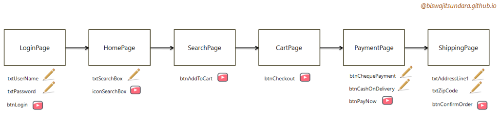

Page Object Model
Please comment below if you like the book
Author Bio
This web book is written by Biswajit Sundara. He has 10+ years of IT experience and an avid blogger on technology.
March 31st, 2020
Page Object Model Basics
Page Object Model is a selenium design pattern using which we can build reusable and extensible framework.
What is Page Object Model
Popularly called as POM is a design pattern which simply means to organize classes by web pages and in test cases call the methods from the page classes. I have seen many people referring to this as framework. Please note Page Object Model is not a framework and also this is not a language specific design pattern. This is a design pattern from selenium.Application Under Test is simply a collection of web pages and the webpage contains set of objects. The POM design models the same in the test code. For every web page there will be a corresponding page class and for every UI object there will be corresponding web elements defined in the page class. All the UI actions/services offered on the page will have corresponding page action method in the page class. This helps in reducing duplicate code and easy to fix applicable areas in case of UI changes.
 Note - The pencil icon indicates the UI elements, the play button indicates it routes us to the next page.
Benefits of using POM
Frameworks designed with POM are highly popular and widely used across teams. Benefits of using this approach- Test Maintenance
Let's say we don't use POM and write scripts differently and there's a change on a particular page. The locator is changed. A mandatory field is added or removed. Then how can we make that change. Until unless we run all our scripts and analyse the failure points we can't update all the places. Whereas if we use the POM design then for each page we maintain a separate class file. If the developer informs us there's a change in the page then go to the particular class file and make required updates that's it and we are done. So this way we can make changes to only the applicable class file, we don't touch and mess up any other class file. So test maintenance becomes really easy. - Reducing code duplication/Reusability
Let's say we have 1000 test cases for an e-commerce application. For each test case we would login to application. So if we keep all our codes at the test case level then we will have to write codes for login in all these 1000 test cases. The code base will be really huge and if there's any change then we will have to update all our test cases one by one. Instead if we use POM approach, we can keep all the login related objects/methods in one page and all the 1000 test cases can reuse them. This way we can reduce the code redundancy significantly. Also for multi lingual sites (English plus French, German etc) using POM design helps a lot as we can simply create another page class file for another language. We can also maintain packages based on language. like pages_en for english. pages_fr for French etc. - Readability
If we write all the locators, methods in the test case class file then there will be too much code in the test case file and if we read we can't get the real picture easily. However in POM design we keep all the internal architecture inside page class files and in the test case file we only write the methods to be called from the page class files so it gives us the feeling of a story. If we read the method names, at a glance we can say what the flow is.
Rules Of POM
- There should be a separate class file for each webpage E.g LoginPage.java, HomePage.java etc.
- The page classes should be under one package. E.g under package "pages"
- The pages should extend one wrapper class.
public class LoginPage extends BasePage
- The Base Page can hold actions those are common across the pages e.g handling a popup, handling menu items
- All page class needs to have a constructor (page factory model)
public class LoginPage extends BasePage { public LoginPage(WebDriver driver) { PageFactory.initElements(driver,this); } }
- The page class should have locators and the action methods for the web page
//locators @FindBy(how=How.ID,using="username") private WebElement eleUserName; //Action Methods public LoginPage enterUserName(String data) { type(eleUserName, data); return this; }
- For Login page, we need to have the locators userid, password, login button and then the action methods like enterUserName, enterPassword, clickLogin etc.
- This is advisable not to use assertions in the pages. However I feel that helps. We can keep all the assertions/verifications in the page.
- If we use Fluent design pattern then there should be a page method that links to another page.
@FindBy(how=How.CLASS_NAME,using="decorativeSubmit") private WebElement eleLogin; public HomePage clickLogIn() { click(eleLogin); return new HomePage(); }
Disadvantages
There are some criticisms of this design pattern also.- Spending more time on designing the pages. In one of my projects I have seen people were developing page classes for each and every page/every field and that was taking time. However I suggested them to include fields that are required to cover test cases and then we can extend that further. The idea worked well.
- It violates the SOLID principle. The Single Responsibility says every class file needs to have only one work to do. However in our page classes we include both locator & page action methods so multiple responsibilities are assigned to one class.
Java Factory Design Pattern
Factory design pattern is a java design pattern categorized in creational design pattern. It is one of the widely used and popular design pattern. The design pattern says client class should pass inputs to the factory class & the factory class should create objects for the sub classes and return to the client.
The Problem
Every design pattern solves one or many problems. So we must know which problem is solved by Factory design pattern. Let's say we have an ecommerce site like Flipkart where the user can order any item. So here the client is the Flipkart app.public class FlipKart { public static Scanner sc= new Scanner(System.in); public static String product_order; public static DellLaptop dellLaptop; public static HPLaptop hpLaptop; public static void main(String args[]) { System.out.println("Enter the product name to order="); String product_order= sc.next(); if(product_order.equalsIgnoreCase("Dell_Laptop")){ dellLaptop = new DellLaptop(); } else if(product_order.equalsIgnoreCase("HP_Laptop")) { hpLaptop = new HPLaptop(); } } }So here the objects are getting created in the client code. Every time a new product is added, the client code needs to be modified. So here we have two problems
- The implementation details are exposed. The client knows how product objects are created. There's no encapsulation.
- Every time we need to change the code and compile the code while adding/removing product so the dependency is high and it's tightly coupled
The Solution
Using factory design pattern we can solve the above problems.package pattern_one; public interface Product { public void printPrice(); }
package pattern_one; public class Dell implements Product{ int price=4000; public Dell() { System.out.println("Dell Laptop is added to your cart"); } @Override public void printPrice() { System.out.println("Dell Laptop Price="+price); } }
package pattern_one; public class HP implements Product{ int price=6000; public HP() { System.out.println("HP Laptop is added to your cart"); } @Override public void printPrice() { System.out.println("HP Laptop Price="+price); } }
package pattern_one; public class ProductFactory { public Product getInstance(String prodname) { if(prodname.equalsIgnoreCase("Dell")) { return new Dell(); } else if(prodname.equalsIgnoreCase("HP")) { return new HP(); } return null; } }
package pattern_one; public class FlipKart { public static void main(String args[]) { ProductFactory prodfact= new ProductFactory(); Product prod= prodfact.getInstance("Dell"); prod.printPrice(); prod= prodfact.getInstance("HP"); prod.printPrice(); } }
- Code for interface not for implementation. In the above example, we are creating a variable for interface product and then assigning different product objects to the variable.
- The object instantiation is not in the client code, the object creation is happening in the product factory class.
- Using interface we achieve abstraction and since the object creation is hidden from the client code so encapsulation is also achieved.
- If there's a new product comes tomorrow like Asus Laptop then we can create a separate class for Asus and update the product factory. There is no need to update the client code. If we pass the name as string to product factory then it will return the object for Asus class. So its easy to extend the functionality without impacting the client code and it's one big achievement.
When to use Factory Pattern
- The factory pattern needs to be used when the client class wants to create object of sub classes but doesn't want to bother how the objects of sub classes are created. In the above example, Flipkart app just wants objects for different laptops. The app expects an object to interact with product just by passing the name of the product. It doesn't mind how the product objects are created, what are the dependencies those products have etc.
- In other words we can say, when the requirement is to create objects based on different input conditions, parameters then Factory Pattern suits well.
POM with Page Factory
To support the page object model, Selenium has a class called PageFactory class. The responsibility of the page factory class is to initialize the web elements of the page class.
public class LoginPage{ @FindBy(how = How.ID, using = "email") private WebElement username; @FindBy(how = How.ID, using = "passwd") private WebElement password; @FindBy(how = How.ID, using = "SubmitLogin") private WebElement loginbutton; //Page Actions public void enterUserName(String text){ username.sendKeys(text); } public void enterPassword(String text){ password.sendKeys(text); } public void clickLogin(){ loginbutton.click(); } }
public class HomePage{ private WebDriver driver; public HomePage(WebDriver driver){ this.driver=driver; PageFactory.initElements(driver, this); } //Page Elements @FindBy(xpath= "//h1[@class='page-heading' and text()='My account']") private WebElement pageHeading; @FindBy(id= "search_query_top") private WebElement searchBox; @FindBy(name= "submit_search") private WebElement searchIcon; //Page Actions public void enterSearchItem(String text){ searchBox.sendKeys(text); } public void clickSearchIcon(){ searchIcon.click(); } }
public class FirstTest extends TestSetup{ @Test public void executeTest() { LoginPage loginpage= PageFactory.initElements(driver, LoginPage.class); loginpage.enterUserName("abc@gmail.com"); loginpage.enterPassword("automation"); loginpage.clickLogin(); HomePage homepage= new HomePage(driver); homepage.enterSearchItem("dress"); homepage.clickSearchIcon(); }
public class TestSetup { public WebDriver driver; @BeforeClass public void startTest() { System.setProperty("webdriver.chrome.driver", "C:\\Users\\Biswajit\\chromedriver.exe"); driver= new ChromeDriver(); driver.get("http://automationpractice.com/index.php?"); driver.manage().window().maximize(); } @AfterClass() public void endTest() { driver.quit(); } }
Observation
- We can have the initElements in the test case class or in the page class. For the LoginPage we have the initElements method in the test class. However for the HomePage class we are having the initElements method in the page class constructor. Whenever we create the object of the home page, it creates the object and then calls the initElements method. If you notice, we don't have any constructor in the LoginPage and it works fine. Both ways are correct however my preference is to keep the PageFactory.initElements() method in the page class.
- The @FindBy annotation removes the boiler plate code and locates the element and saves in the web element variable mentioned below. I will explain more how it works internally.
Points to Ponder
- If we use Page Factory then we can use objects/ui fields without worrying about their initialization.
- WebElements are evaluated lazily. Upon intialization, it creates a proxy for the web element and whenever we use the field in page object then only there will be a call to the "find element" for the field.
- All the field variables should be declared as private, but the page methods should be public as those are the page services should be accessed from outside.
References
https://github.com/SeleniumHQ/selenium/wiki/PageFactoryhttps://github.com/SeleniumHQ/selenium/wiki/PageObjects
Selenium Page Factory
We will look into all the aspects of Selenium Page Factory here.
How it works
To initialize the web elements we write PageFactory.initElements(driver, LoginPage.class); Let's see how it works in the back end. The init elements method accepts webdriver as the first argument and then the class name as second argument. Then it calls the instantiate page method which has the same two arguments then the object is saved as page object. Then the init elements method is called with parameters as driver & the created page object.
public class PageFactory {
public static T initElements(WebDriver driver, Class pageClassToProxy)
{
T page = instantiatePage(driver, pageClassToProxy);
initElements(driver, page);
return page;
}
The instantiate page method first tries to get the constructor of the class with by passing web driver as parameter type. Then it returns the specified constructor of the class
which is saved as constructor object. When a class has no argument constructor then we can create object using class.newInstance() however since we have argument here so
first constructor object needs to be created and then we can create new instance from the constructor.
private static <T> T instantiatePage(WebDriver driver, Class<T> pageClassToProxy)
{
try
{
Constructor<T> constructor = pageClassToProxy.getConstructor(WebDriver.class);
return constructor.newInstance(driver);
}
catch (NoSuchMethodException e)
{
return pageClassToProxy.newInstance();
}
//exceptions
}
Once the page object is instantiated then there are couple of methods for initElements those call the searchcontext through ElementLocatorFactory and also pulls all the field names from the class
Then initializes them one by one using the same web driver. So basically the driver.findElement("locator") is taken care completely using this class.
@FindBy
@FindBy annotation is used in conjunction with the selenium Page Factory to locate the web elements. Usually these web elements are initialized as the page object is created. The @FindBy annotation can be used to locate one or more elements based on the specified criteria.@FindBy(how = How.TAG_NAME, using = "a") private List<WebElement> allLinks; @FindBy(how = How.ID, using = "xxxx") private WebElement element;We can use the how or directly use the locator type and value. Both of these point to the same element.
@FindBy(id = "foobar") WebElement foobar; @FindBy(how = How.ID, using = "foobar") WebElement foobar;
@FindBys
Some situations we can't locate the element using a single locator strategy so we can go for FindBys. Please note, when we use FindBys then all the locator criteria should be satisfied in order to locate the web element/elements. It uses the look up as a chained series of FindBys.
@FindBys({
@FindBy(tagName = "button"),
@FindBy(className = "submit")
})
private WebElement Signin;
We can save multiple web elements using List<WebElement> if it returns.
@FindAll
Here also we will use a group of @FindBy criteria and the element can be located using any of the @FindBy. Please note, there's no guarantee in which order it will process from the look up if any one @FindBy is satisfied then it will return the web element.
@FindAll({
@FindBy(how = How.ID, using = "uname"),
@FindBy(className = "user-name")
})
private WebElement userName;
Difference between @FindBy, @FindBys, @FindAll
- @FindBy - There's only one condition using which we will locate one or more web elements.
- @FindBys - There are multiple @FindBy and it will return the web element only when ALL @FindBy are satisfied.
- @FindByAll - There are multiple @FindBy and it will return the web element when any of the @FindBy is satisfied.
Difference between @FindBy and FindElement
- @FindBy is an annotation and findElement is an web driver method.
- Both are used for locating web elements.
- @FindBy is used in conjuction with PageFactory to finding web elements. findElement is the normal way of locating web elements.
- If the page is not initialized then @FindBy will throw null pointer exception.
CacheLookup
- @CacheLookup is an annotation that is used to mark elements so that once located, the same DOM instance can be used always.
- CacheLookup is a marker interface.
- This helps when the DOM never changes and multiple calls to the web element is made because it searches once.
- Be careful while using this as possibility of StaleElementReferenceException is more in this approach.
- This is not helpful in AJAX applications because the DOM changes frequently there.
@CacheLookup @FindBy(how = How.ID, using = "email") private WebElement username;
AjaxElementLocatorFactory
The AjaxElementLocatorFactory class helps to inject wait or time out in the page factory model.
private int timeOut = 30;
private WebDriver driver;
public HomePage(WebDriver driver)
{
this.driver=driver;
PageFactory.initElements(new AjaxElementLocatorFactory(driver,timeOut), this);
}
Here we have specified the time out as 30 seconds. So for every web element the wait condition of 30 seconds is applied. It will throw NoSuchElementException only after 30 seconds if the element is not found.
Please note, by default there's no waiting in the page object pattern. Once the @FindBy annotation is executed it will straight away try to locate the element and if not found will throw the exception.
Also the selenium page factory uses the lazy loading concept, it tries to look for web element only when called through the page object. So using AjaxElementLocatorFactory we can solve the synchronisation issue.
POM With Generics
Generics is the way of specifying the type of class, methods etc. This helps in achieving compile time type-safety. A quick example of generics can be List<String> listItems; is using generics to indicate the type of list is string. We can apply this principle in selenium page object model. Basically we will create a class "Page" which will create objects for the pages and return the same.
public class Page { public WebDriver driver; public WebDriverWait wait; //Constructor public Page(WebDriver driver, WebDriverWait wait){ this.driver = driver; this.wait = wait; } //Using java generics create and return a new page. public <TPage> TPage GetInstance (Class<TPage> pageClass) { try { return pageClass.getDeclaredConstructor(WebDriver.class, WebDriverWait.class) .newInstance(this.driver, this.wait); } catch (Exception e) { System.out.println(e.getMessage()); return null; } } }In the TestSetup class, we create the object of the page class and provide the webdriver & webdriver wait objects as parameters.
public class TestSetup { public WebDriver driver; public WebDriverWait wait; public Page page; @BeforeClass public void startTest() { System.setProperty("webdriver.chrome.driver", "C:\\Users\\Biswajit\\chromedriver.exe"); driver= new ChromeDriver(); driver.get("http://automationpractice.com/index.php?"); driver.manage().window().maximize(); wait= new WebDriverWait(driver,30); page= new Page(driver,wait); } @AfterClass() public void endTest() { driver.quit(); } }Then in the TestClass we are calling the GetInstance method by supplying the class name as parameter and fetching the actual pageclass object and then invoking the page methods.
public class FirstTest extends TestSetup{ @Test public void executeTest() { page.GetInstance(LoginPage.class).enterUserName("abc@gmail.com"); page.GetInstance(LoginPage.class).enterPassword("automation"); page.GetInstance(LoginPage.class).clickLogin(); page.GetInstance(HomePage.class).enterSearchItem("dress"); page.GetInstance(HomePage.class).clickSearchIcon(); } }There are no changes to the page classes though. However here you go
public class LoginPage{ private WebDriver driver; private WebDriverWait wait; public LoginPage(WebDriver driver, WebDriverWait wait) { this.driver=driver; this.wait=wait; } private By username= By.id("email"); private By password= By.id("passwd"); private By loginbutton= By.id("SubmitLogin"); //Page Actions public void enterUserName(String text){ driver.findElement(username).sendKeys(text); } public void enterPassword(String text){ driver.findElement(password).sendKeys(text); } public void clickLogin(){ driver.findElement(loginbutton).click(); } }
public class HomePage{ private WebDriver driver; private WebDriverWait wait; public HomePage(WebDriver driver, WebDriverWait wait) { this.driver=driver; this.wait=wait; } //Page Elements private By searchBox= By.id("search_query_top"); private By searchIcon= By.name("submit_search"); //Page Actions public void enterSearchItem(String text){ driver.findElement(searchBox).sendKeys(text); } public void clickSearchIcon(){ driver.findElement(searchIcon).click(); } }Here the benefit is we are not creating page objects in the test script. While reading the code written for the test script it's easy to follow which method is called from which class.
Using BasePage Class
If we want to use the base page class concept in the above design then below are the changes we need to make.public class BasePage { private WebDriver driver; private WebDriverWait wait; public BasePage(WebDriver driver, WebDriverWait wait) { this.driver=driver; this.wait=wait; } //Click Method public void click (By eleLoc) { driver.findElement(eleLoc).click(); } //Write Text public void enterText (By eleLoc, String text) { driver.findElement(eleLoc).sendKeys(text); } //Read Text public String getText (By eleLoc) { return driver.findElement(eleLoc).getText(); } }
public class Page { public WebDriver driver; public WebDriverWait wait; //Constructor public Page(WebDriver driver, WebDriverWait wait){ this.driver = driver; this.wait = wait; } //Using java generics create and return a new page. public <TPage extends BasePage> TPage GetInstance (Class<TPage> pageClass) { try { return pageClass.getDeclaredConstructor(WebDriver.class, WebDriverWait.class) .newInstance(this.driver, this.wait); } catch (Exception e) { System.out.println(e.getMessage()); return null; } } }
public class LoginPage extends BasePage{ public LoginPage(WebDriver driver, WebDriverWait wait){ super(driver,wait); } private By username= By.id("email"); private By password= By.id("passwd"); private By loginbutton= By.id("SubmitLogin"); //Page Actions public void enterUserName(String text){ enterText(username,text); } public void enterPassword(String text){ enterText(password,text); } public void clickLogin(){ click(loginbutton); } }There's no change to the TestSetup class and also we need to modify the HomePage class similar to the LoginPage class.
POM with Loadable Component
The loadable component in Page Object Model pattern ensures that the page/component is loaded successfully.
How Loadable Component Works
- The PageClass needs to extend LoadableComponent class.
public class LoginPage extends LoadableComponent<LoginPage>
- LoadableComponent is an abstract class and has three methods - get(), load(), isLoaded().
- The get method has the implementation as below. Basically it calls the isLoaded() method first. If there's no error then it returns the class/subclass else it calls the load() method and then one more time isLoaded() method.
public T get() { try { isLoaded(); return (T) this; } catch (Error e) { load(); } isLoaded(); return (T) this; }
- The other two load() and isLoaded() are abstract methods and don't have the implementations, so those need to be implemented in the class that extends Loadable component class. So here we have complete liberty what code to include in these two methods.
- Based on the application page design, speed of the rendering we need to write codes for load() and isLoaded method. A simple example can be like below.
@Override protected void load() { driver.get("http://automationpractice.com/index.phpcontroller=authentication&back=my-account"); System.out.println("url opened"); } @Override protected void isLoaded() throws Error { String url = driver.getCurrentUrl(); Assert.assertEquals(true, url.endsWith("my-account")); }
- So in the testclass when the get() method will be called. First it will invoke the isLoaded() method and check if the url contains the page name. If not then it will throw an error and in the get() method, in case of error it will go to load() method, so it will load the url again and then again check if the url contains the page name.
- We can add wait conditions in isLoaded() method and customize it as per our need. We may use ExpectedConditions.urlContains(), ExpectedConditions.urlToBe(), ExpectedConditions.titleContains(), ExpectedConditions.titleIs() etc. We can also wait for a particular element on the page something like page heading, menu item etc.
Real time Scenario
- The load() method loads the url. Here the catch is, not all websites are structured by pages. So if the url remains same across pages and we load it again in some page then we might go back to previous page. Also the websites designed with webservices/API calls/Data fetch calls might break if we reload the same url. So I have seen in many frameworks this method is left blank.
- Let's say we are working on an e-commerce application. On home page, when we search for an item like dress/t-shirt etc and click on search button then the search item gets added to the url. If we use the url in the load method then we will have to pass the search string from testcase and pass on to the page constructor and then use it in the load method.
private WebDriver driver; private String searchItem; public SearchPage(WebDriver driver, String searchItem) { this.driver=driver; this.searchItem=searchItem; } @Override protected void load() { driver.get("http://automationpractice.com/index.php? controller=search&orderby=position&orderway=desc&search_query="+searchItem+"&submit_search="); } @Override protected void isLoaded() throws Error { String title = driver.getTitle(); Assert.assertEquals(title, "Search - My Store"); }
Customizing LoadableComponent
- We can customize the LoadableComponent class and can modify the methods to fit in our framework. Let's see an example below.
public abstract class CustomLoadableComponent<T extends CustomLoadableComponent<T>> { private WebDriverWait wait = null; private static final int LOAD_TIMEOUT=30; @SuppressWarnings("unchecked") public T get() { try { isLoaded(); return (T) this; } catch (Error e) { System.out.println(e.getMessage()); load(); } isLoaded(); return (T) this; } public boolean isElementLoaded(WebDriver driver,By locPath) { wait= new WebDriverWait(driver,LOAD_TIMEOUT); wait.until(ExpectedConditions.visibilityOfElementLocated(locPath)); WebElement ele = driver.findElement(locPath); if(ele.isDisplayed()) return true; else return false; } protected abstract void load(); protected abstract void isLoaded() throws Error; }
Then in our page class we can use this waypublic class LoginPage extends CustomLoadableComponent<LoginPage> { private WebDriver driver; public LoginPage(WebDriver driver){ this.driver=driver; } //Page Elements private By pageHeading= By.xpath("//h1[@class='page-heading' and text()='Authentication']"); private By username= By.id("email"); private By password= By.id("passwd"); private By loginbutton= By.id("SubmitLogin"); //Page Actions public void enterUserName(String text) { driver.findElement(username).sendKeys(text); } public void enterPassword(String text) { driver.findElement(password).sendKeys(text); } public void clickLogin() { driver.findElement(loginbutton).click(); } @Override protected void load() { driver.get("http://automationpractice.com/index.php?controller=authentication&back=my-account"); } @Override protected void isLoaded() throws Error { if(!isElementLoaded(driver,pageHeading)) throw new Error("Page is not loaded"); } }
Advantages
The benefit of using the loadable component design pattern is, it ensures the page is loaded as expected when the page is called. If the page is not loaded, then it reloads the page url so incase of any connection errors or loading issues are resolved.Disadvantages
The page loading is dependent a specific check and it creates few limitations.- We can't say if that is satisfied then all our elements are loaded.
- If we would like to use the page under some other condition then it won't be possible.
- If the html page has different loadable sections as branches, then creating separate page class won't be effective and also using this pattern won't help because everytime we would need pageloading check differently.
- Mostly the navigation between pages happen via page controls like when login button is clicked then the home page is loaded. So the load() method used for loading a direct url might not be ideal.
References
https://confengine.com/selenium-conf-2016/proposal/2340https://github.com/SeleniumHQ/selenium/wiki/LoadableComponent
POM with Fluent Design Pattern
The fluent design pattern is implemented by method chaining. In this design each method returns this (self). The benefit of this design is domain specific language. It increases the readability of the business logic.
Java Example
class Customer { String fname,lname,sex,country; public Customer FirstName(String firstName){ fname=firstName; return this; } public Customer LastName(String lastName){ lname=lastName; return this; } public Customer Sex(String gender){ sex=gender; return this; } public Customer Country(String ctry){ country=ctry; return this; } public void display(){ System.out.println("Name: "+fname + " " +lname ); System.out.println("Sex: "+sex); System.out.println("Country: "+country); } } public class FluentDesignPattern { public static void main(String[] args) { Customer c1= new Customer(); c1.FirstName("Jack").LastName("Dowson").Sex("Male").Country("USA").display(); Customer c2= new Customer(); c1.FirstName("Rose").LastName("Buketer").Sex("Female").Country("FRANCE").display(); } }
Selenium Example
The selenium page object model along with fluent design pattern works like a charm. Here are some basic rules we need to follow.- Page class methods should have pagename as the return type, and method inside should have return this;
- The method from which it navigates to the next page, should have the return type of the page that it's routing to. For example, the click_login() method in the Login page should have return type as HomePage because once the method is executed then we will have to call the home page methods.
- This approach makes the test script so clear that one can understand how the test flow goes.
- If there's any method fails and returns null then the chain is broken so we can figure out easily from where the test flow is breaking.
- If there are multiple routing available from a particular page, then we need to implement it that way. For example, from the login page if the successful login takes it to home page and unsuccessful login takes to error page then we will have to design the two pages, two click_login methods to route to these pages.
- The only disadvantage of this approach is that, the test designer should know which method returns which page else the flow will be messed up.
public class LoginPage{ private WebDriver driver; public LoginPage(WebDriver driver){ this.driver=driver; PageFactory.initElements(driver, this); } //Page Elements @FindBy(how = How.ID, using = "email") private WebElement username; @FindBy(how = How.ID, using = "passwd") private WebElement password; @FindBy(how = How.ID, using = "SubmitLogin") private WebElement loginbutton; //Page Actions public LoginPage enterUserName(String text){ username.sendKeys(text); return this; } public LoginPage enterPassword(String text){ password.sendKeys(text); return this; } public HomePage clickLogin(){ loginbutton.click(); return new HomePage(driver); } }
public class HomePage{ private WebDriver driver; public HomePage(WebDriver driver){ this.driver=driver; PageFactory.initElements(driver, this); } //Page Elements @FindBy(id= "search_query_top") private WebElement searchBox; @FindBy(name= "submit_search") private WebElement searchIcon; //Page Actions public HomePage enterSearchItem(String text){ searchBox.sendKeys(text); return this; } public SearchPage clickSearchIcon(){ searchIcon.click(); return new SearchPage(driver); } }
public class SearchPage{ private WebDriver driver; public SearchPage(WebDriver driver){ this.driver=driver; PageFactory.initElements(driver, this); } @FindBy(how=How.XPATH, using="//span[@class='navigation_page' and text()='Search']") private WebElement sectionHeading; public void searchPageDisplayed(){ if(sectionHeading.isDisplayed()){ System.out.println("Search Page is successfully displayed"); } } }
public class FirstTest extends TestSetup{ @Test public void executeTest() { new LoginPage(driver) .enterUserName("abc@gmail.com") .enterPassword("automation") .clickLogin() .enterSearchItem("dress") .clickSearchIcon() .searchPageDisplayed(); } }
POM without Page Factory
The Page Object Model can be implemented without page factory also. Here we have also created another class PageObjectManager to manage the page objects.
public class PageObjectManager { private WebDriver driver; private WebDriverWait wait; LoginPage loginpage; HomePage homepage; SearchPage searchpage; public PageObjectManager(WebDriver driver, WebDriverWait wait) { this.driver=driver; this.wait=wait; } public LoginPage getLoginPage(){ return (loginpage == null) ? loginpage = new LoginPage(driver,wait) : loginpage; } public HomePage getHomePage(){ return (homepage == null) ? homepage = new HomePage(driver,wait) : homepage; } public SearchPage getSearchPage(){ return (searchpage == null) ? searchpage = new SearchPage(driver,wait) : searchpage; } }
public class TestSetup { public WebDriver driver; public WebDriverWait wait; public PageObjectManager pagemanager; @BeforeClass public void startTest() { System.setProperty("webdriver.chrome.driver", "C:\\Users\\chromedriver.exe"); driver= new ChromeDriver(); driver.get("http://automationpractice.com/index.php?"); driver.manage().window().maximize(); wait= new WebDriverWait(driver,30); pagemanager= new PageObjectManager(driver,wait); } @AfterClass() public void endTest() { driver.quit(); } }
public class BasePage { private WebDriver driver; private WebDriverWait wait; public BasePage(WebDriver driver, WebDriverWait wait) { this.driver=driver; this.wait=wait; } //Click Method public void click (By eleLoc) { wait.until(ExpectedConditions.elementToBeClickable(eleLoc)); driver.findElement(eleLoc).click(); } //Write Text public void enterText (By eleLoc, String text) { wait.until(ExpectedConditions.elementToBeClickable(eleLoc)); driver.findElement(eleLoc).sendKeys(text); } //Read Text public String getText (By eleLoc) { wait.until(ExpectedConditions.visibilityOfElementLocated(eleLoc)); return driver.findElement(eleLoc).getText(); } //Element Displayed public boolean isDisplayed(By eleLoc) { wait.until(ExpectedConditions.visibilityOfElementLocated(eleLoc)); if(driver.findElement(eleLoc).isDisplayed()) return true; else return false; } }
public class LoginPage extends BasePage{ public LoginPage(WebDriver driver, WebDriverWait wait) { super(driver,wait); } //Page Elements private By username= By.id("email"); private By password= By.id("passwd"); private By loginbutton= By.id("SubmitLogin"); //Page Actions public void enterUserName(String text){ enterText(username,text); } public void enterPassword(String text){ enterText(password,text); } public void clickLogin(){ click(loginbutton); } }
public class HomePage extends BasePage{ public HomePage(WebDriver driver, WebDriverWait wait) { super(driver,wait); } //Page Elements private By searchBox= By.id("search_query_top"); private By searchIcon= By.name("submit_search"); //Page Actions public void enterSearchItem(String text){ enterText(searchBox,text); } public void clickSearchIcon(){ click(searchIcon); } }
public class SearchPage extends BasePage{ public SearchPage(WebDriver driver, WebDriverWait wait) { super(driver,wait); } //Page Elements private By pageHeading=By.xpath("//span[@class='navigation_page' and text()='Search']"); public void searchPageDisplayed(){ if(isDisplayed(pageHeading)) { System.out.println("Search Page is successfully displayed"); } } }
public class FirstTest extends TestSetup{ @Test public void executeTest() { pagemanager.getLoginPage().enterUserName("abc@gmail.com"); pagemanager.getLoginPage().enterPassword("automation"); pagemanager.getLoginPage().clickLogin(); pagemanager.getHomePage().enterSearchItem("dress"); pagemanager.getHomePage().clickSearchIcon(); pagemanager.getSearchPage().searchPageDisplayed(); } }
Page Object Model Framework
Using all the concepts we have discussed here, let's build a simple framework using the page object model design pattern. This framework is designed for website automationpractice.com and has a test script for one flow from end to end. The source code is hosted in GitHub.
https://github.com/biswajitsundara/page-object-model